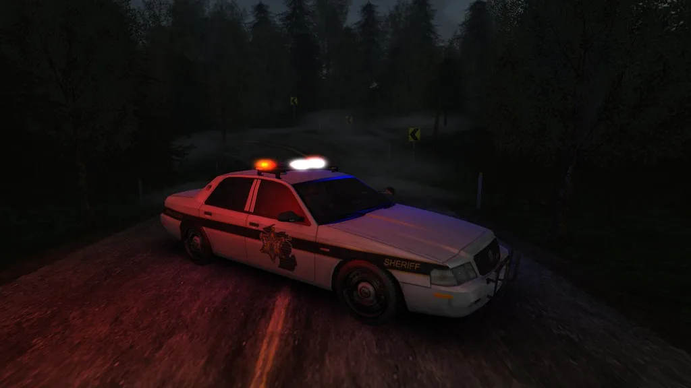

'7명 사상' 안성 플리마켓 돌진사고 운전자, 오늘 구속 갈림길
경기 안성시의 한 플리마켓 행사장에 트럭이 돌진해 2명이 숨지고 5명이 다치는 사고를 낸 60대 운전자에 대한 구속 여부가 21일 결정될 예정이다. 수원지방법원 평택지원은 이날 오전 11시 교통사고처리특례법상 치사상 혐의를 받는 60대 A씨에 대한 구속 전 피의자 심문, 이른바 영장실질심사를 진행하며 구속영장 발부 여부는 이날 오후 나올 것으로 예상된다. 주말 사이 벌어진 이번 사고로 지역 사회 전반이 술렁인 가운데, 법원의 판단에 관심이 집중되고 있다.
사고는 지난 19일 오전 11시 18분께 안성시 공도읍 공도10호 어린이공원에서 열린 플리마켓 행사장에서 발생했다. A씨가 몰던 1t 트럭이 행사장 안으로 돌진하면서 현장에 있던 시민들을 덮쳤고, 이 사고로 10대 남학생과 그의 어머니인 40대 여성이 숨졌다. 함께 있던 다른 시민 5명도 크고 작은 부상을 입어 인근 병원으로 옮겨져 치료를 받았다. 당시 행사장에는 주말을 맞아 나들이 나온 인근 주민들이 몰려 있어 자칫 더 큰 인명피해로 이어질 뻔했다는 지적도 나온다. 사고 신고를 받고 출동한 구조대는 부상자들을 신속히 병원으로 이송했으며, 경찰은 곧바로 현장을 통제하고 목격자 진술 확보에 나섰다.
사고 경위를 둘러싼 A씨의 진술은 시간이 지나며 달라졌다. 사고 직후 경찰 조사에서 A씨는 가속페달을 제동장치로 착각해 사고를 냈다고 진술한 것으로 알려졌다. 그러나 이후 조사 과정에서는 진술을 바꿔 차량이 갑자기 급가속하는 '급발진' 상태였다고 주장하고 나서면서, 사고 원인을 둘러싼 공방이 이어지고 있다.
경찰은 A씨의 주장과 별개로 정확한 사고 원인을 규명하기 위한 과학적 조사에 나선 상태다. 사고 차량은 국립과학수사연구원에 정밀 감정이 의뢰됐으며, 감정 결과를 통해 실제 차량 결함에 의한 급발진이었는지, 아니면 운전자의 조작 실수였는지가 가려질 전망이다. 이번 감정 결과는 향후 진행될 재판에서도 핵심 쟁점이 될 것으로 보인다. 급발진 의심 사고는 그동안 여러 사례에서 차량 결함 입증이 쉽지 않았던 만큼, 이번 감정에서도 명확한 결론이 나올 수 있을지 주목된다.

이번 사고는 지역 주민들이 일상적으로 즐기던 동네 행사에서 벌어졌다는 점에서 지역 사회에 큰 충격을 안겼다. 특히 한 가족의 자녀와 부모가 함께 목숨을 잃은 사실이 알려지면서 안타까움이 커지고 있으며, 부상자들의 회복 상황에도 지역 주민들의 관심이 이어지고 있다. 지자체 차원의 피해자 지원 방안 마련도 뒤따를 것으로 예상된다. 지역 주민들 사이에서는 앞으로 열리는 야외 행사의 안전 관리 기준을 다시 점검해야 한다는 목소리도 나오고 있다.
법조계에서는 이번 영장실질심사 결과에 따라 향후 수사와 재판의 방향이 크게 갈릴 것으로 보고 있다. 급발진 주장이 받아들여질 경우 형사책임의 무게가 달라질 수 있는 만큼, 국과수 감정 결과가 나오기까지 상당한 시일이 걸릴 가능성도 제기된다. 유족과 부상자 측은 철저한 진상규명과 함께 책임 소재를 명확히 가려줄 것을 요구하고 있는 것으로 전해졌다. 경찰 역시 수사 결과를 바탕으로 신속하고 투명하게 사고 원인을 밝히겠다는 방침을 밝힌 상태다.